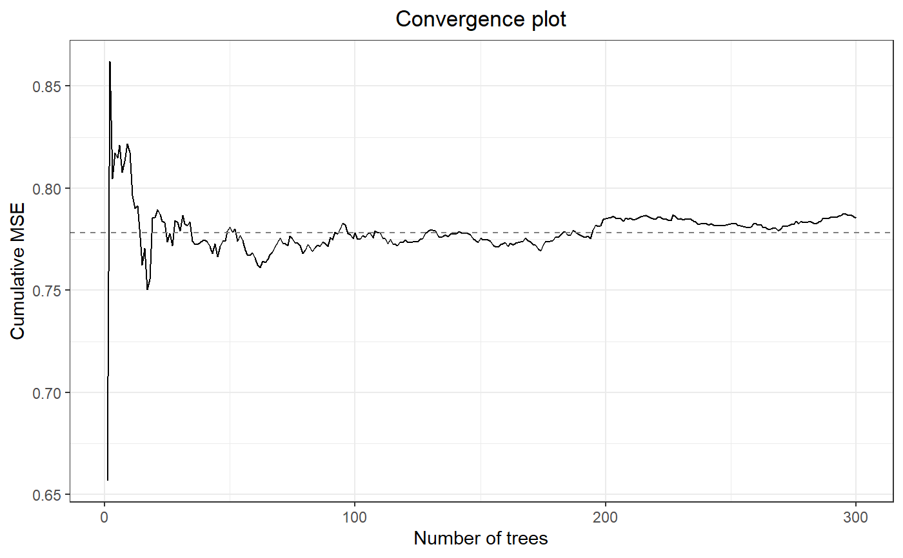
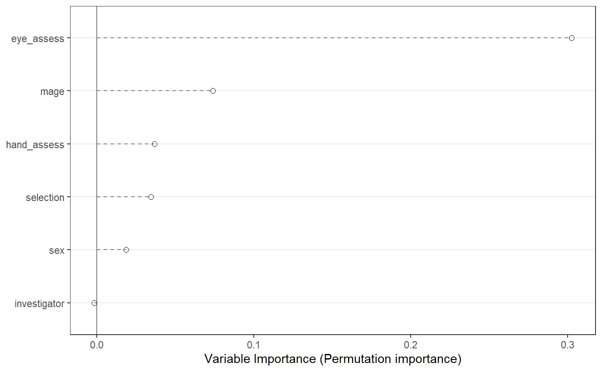
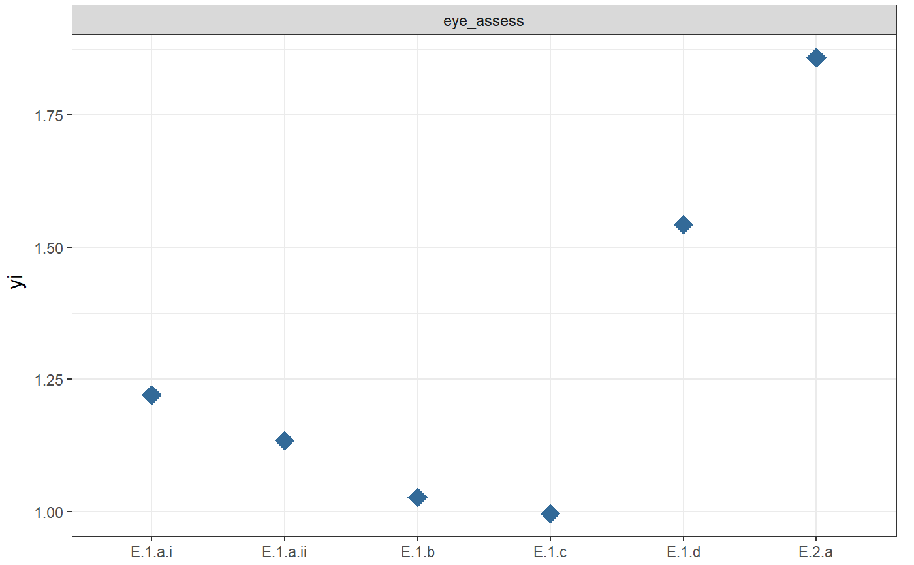

ClusterMF-deprecated.RdThis function conducts a clustered MetaForest analysis for dependent data.
Using clustered random sampling, the dataset is split into two
cross-validation samples by study. All dependent effect sizes from each study
are thus included in the same cross-validation sample. Then, two random
forests are grown on these cross-validation samples, and for each random
forest, the other sample is used to calculate prediction error and variable
importance (see Janitza, Celik, & Boulesteix, 2016). The
predict.MetaForest method uses all trees from both forests.
ClusterMF(...)
| formula | Formula. Specify a formula for the MetaForest model, for
example, |
|---|---|
| data | Data.frame. Provide a data.frame containing the effect size, moderators, and the variance of the effect size. Defaults to 100. |
| vi | Character. Specify the name of the column in the |
| study | Character. Specify the name of the column in the |
| whichweights | Character. Indicate what time of weights are required.
A random-effects MetaForest is grown by specifying |
| num.trees | Atomic integer. Specify the number of trees in the forest. Defaults to 500. |
| mtry | Atomic integer. Number of candidate moderators available for each split. Defaults to the square root of the number moderators (rounded down). |
| method | Character. Specify the method by which to estimate the residual
variance. Can be set to one of the following: "DL", "HE", "SJ", "ML", "REML",
"EB", "HS", or "GENQ". Default is "REML".
See the |
| tau2 | Numeric. Specify a predetermined value for the residual heterogeneity. Entering a value here supersedes the estimated tau2 value. Defaults to NULL. |
| ... | Additional arguments are passed directly to ranger. It is recommended not to use additional arguments. |
List of length 3. The "forest" element of this list is an object of class "ranger", containing the results of the random forests analysis. The "rma_before" element is an object of class "rma.uni", containing the results of a random-effects meta-analysis on the raw data, without moderators. The "rma_after" element is an object of class "rma.uni", containing the results of a random-effects meta-analysis on the residual heterogeneity, or the difference between the effect sizes predicted by MetaForest and the observed effect sizes.
#Load and clean data from metafor data <- get(data(dat.bourassa1996)) data <- escalc(measure = "OR", ai = lh.le, bi = lh.re, ci = rh.le, di= rh.re, data = data, add = 1/2, to = "all") data$mage[is.na(data$mage)] <- median(data$mage, na.rm = TRUE) data[c(5:8)] <- lapply(data[c(5:8)], factor) data$yi <- as.numeric(data$yi) mf.cluster.b1996 <- MetaForest(formula = yi~ selection + investigator + hand_assess + eye_assess + mage +sex, data, study = "sample", whichweights = "unif", num.trees = 300) #Print MetaForest object mf.cluster.b1996#> Call: #> MetaForest(formula = yi ~ selection + investigator + hand_assess + #> eye_assess + mage + sex, data = data, study = "sample", whichweights = "unif", #> num.trees = 300) #> #> R squared (OOB): 0.1936 #> Residual heterogeneity (tau2): 0.2607#> MetaForest results #> #> Type of analysis: Clustered MetaForest #> Number of studies: Forest 1: 47, Forest 2: 49 #> Number of moderators: 6 #> Number of trees in forest: Two forests of length 150 #> Candidate variables per split: 2 #> Minimum terminal node size: 5 #> OOB prediction error (MSE): 0.6893 #> R squared (OOB): 0.1936 #> #> Tests for Heterogeneity: #> tau2 tau2_SE I^2 H^2 Q-test df Q_p #> Raw effect sizes: 0.4096 0.0894 86.5418 7.4304 561.0564 95 0.0000 #> Residuals (after MetaForest): 0.2607 0.0638 80.3615 5.0920 303.5656 95 0.0000 #> #> #> Random intercept meta-analyses: #> Intercept se ci.lb ci.ub p #> Raw effect sizes: 1.3075 0.0825 1.1457 1.4693 0.0000 #> Residuals (after MetaForest): -0.0020 0.0708 -0.1407 0.1368 0.9778#Interpolated partial dependence plot for a bivariate interaction # \donttest{ PartialDependence(mf.cluster.b1996, vars = c("mage", "eye_assess"), interaction = TRUE)#> Error in PartialDependence.MetaForest(mf.cluster.b1996, vars = c("mage", "eye_assess"), interaction = TRUE): The argument 'interaction' has been deprecated, and is replaced by the argument 'moderator'. See ?PartialDependence for help on how to use the 'moderator' argument.# }